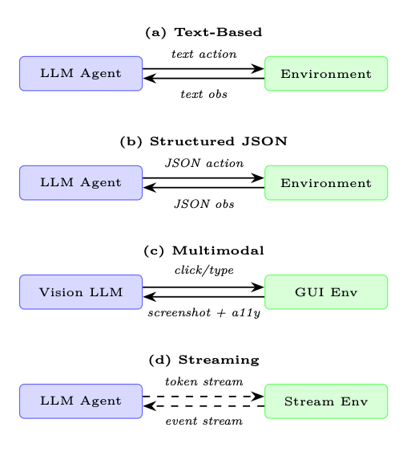

Motivation: Why Agents Need Environments
原 PDF p.375
智能体环境和基准测试
动机：为什么智能体需要环境
原则上，会话语言模型的评估很简单：呈现提示， 收集响应，并根据参考或通过人类判断对其进行评分。智能体评价为 根本不同。智能体必须在世界中行动、观察后果并调整其行为 通过一系列步骤。没有任何单一的回应能够体现这一点；只有结构化环境可以。 范围。我们在强化学习意义上使用环境：智能体与之交互的世界 用于训练或评估，而不是托管的生产基础设施（执行框架、编排器） 智能体在服务时间。执行沙箱出现在这里是因为它们支持这样的环境，但是 智能体工具本身将在第 18 章中介绍。
聊天机器人与智能体的评估差距
聊天机器人评估衡量的是单代人的质量：流畅性、真实性、乐于助人。 智能体评估衡量策略的质量：智能体是否可靠地实现目标 跨越多样化的长期任务？这种差距不仅仅是数量上的——它需要不同的 基础设施。
三种力量推动了对专用智能体环境的需求：
安全探索。 现实世界的系统——生产数据库、实时网站、金融 API—— 无法吸收受训练的智能体的探索行为。沙盒环境 提供忠实的副本，智能体可以在其中失败、恢复和学习，而不会导致不可逆转的情况 伤害。安全隔离（例如 Docker 容器、网络受限的虚拟机）不是可选的；这是一个 一流的设计要求。
可重复的评估。 基准测试测试要求每个智能体在以下情况下面临相同的任务 相同的条件。 环境必须按需确定、受版本控制并且 可分发，以便一个实验室报告的结果可以在另一个实验室重现。没有这个 从历史上看，房地产使得智能体商基准测试难以比较。
课程学习。 从头开始训练智能体执行艰巨的任务是样本效率低下的。恩- 暴露困难课程的环境——作为智能体逐渐增加任务复杂性 改进——显着减少达到目标所需的环境交互次数 性能水平。这反映了人类的学习方式：掌握子技能先于掌握其他技能 整个。
环境作为LLM的强化学习“健身房”
正如 OpenAI Gym [344] 标准化了 RL 算法和模拟之间的接口一样 控制任务、智能体环境标准化了基于 LLM 的智能体和 他们必须解决的各种任务。 这个类比很紧密：reset() 初始化一个新的episode， step(action) 推进世界并返回观察结果和奖励，而 render() 产生 当前状态的人类可读视图。
Environment Design Principles
原 PDF p.376
环境设计原则
一个精心设计的智能体环境暴露了四个正交的设计轴：观察空间、 动作空间、奖励信号和情节结构。正确对待每一项都是必要的；得到所有 四是同时是环境工程技术。
观察空间设计
观察结果是智能体在每个步骤中看到的内容。对于基于 LLM 的智能体来说，观察结果几乎是 始终呈现为文本，但源材料差异很大：
• 纯文本：终端输出、文件内容、API 响应、错误消息。最大兼容 与任何LLM一样，但失去了空间和视觉结构。
• 结构化(JSON/XML)：机器可读的状态表示。实现精确接地 但要求智能体解析结构而不是阅读散文。
• 多模式：屏幕截图、可访问性树、渲染的 HTML。 GUI 和 Web 所必需的 任务；需要具有视觉能力的模型或单独的感知模块。
• 混合：与可访问性树配对的屏幕截图（在 OSWorld 和 VisualWebArena 中使用） 提供视觉上下文和结构化元素标识符，结合两者的优点 方式。
观察泄漏
一个常见的设计错误是在观察中包含智能体不应该包含的信息 可以访问——例如，真实答案、奖励值或未来的任务步骤。 观察泄漏会夸大基准测试分数，并产生在以下情况下发生灾难性失败的智能体： 部署在缺乏此类信息的真实环境中。
行动空间设计
动作空间定义了智能体可以做什么。对于 LLM 智能体，操作通常是文本字符串 由环境解析和执行。常见的操作类型包括：
• 工具调用：外部函数（搜索、计算器、日历）的结构化调用。经常 格式化为 JSON 或 XML 函数调用语法。
• 代码执行：智能体编写在沙箱中运行的代码；返回 stdout/stderr 作为下一个观察。这是最具表现力的动作类型。
• API 交互：对Web 服务的HTTP 请求、数据库查询、shell 命令。
• GUI 操作：单击(x,y)、键入(“文本”)、滚动(方向)、按键(“Enter”)。用于 计算机使用环境。
• 自然语言：针对另一个智能体、人类或子任务规划者的自由格式文本。
奖励信号设计
奖励设计是环境工程中最难的部分。奖励必须是：
-
一致：高奖励应该对应于真正的任务完成，而不是肤浅的智能体。
-
可学习：信号必须足够密集，使智能体能够取得进展；纯稀疏 如果没有额外的塑造，长期任务的奖励通常是无法学习的。
-
防篡改：智能体必须在没有实际完成的情况下才能获得高额奖励 任务（奖励黑客）。
原 PDF p.377
表 20.1：具有权衡的智能体环境的奖励信号类型。
奖励类型 优点 缺点
稀疏（末尾为 0/1） 对齐，难以破解 很难学 密集（阶梯级） 简单易学 容易出现塑形伪影 内在的（好奇心） 推动探索 可能偏离任务 LLM法官 灵活、细致 价格昂贵，不一致 基于执行 地面真相 仅适用于可验证的任务
剧集结构
剧集可以通过多种方式构建：
• 固定长度：智能体恰好执行T 个步骤。实施简单；废物计算 已经解决的任务。
• 提前终止：当智能体发出完成信号或终止状态时，事件结束。 达到了。效率更高，但需要可靠的终止检测器。
• 开放式：没有固定的范围；智能体运行直到达到资源预算（token、API 调用、 墙时间）已耗尽。最接近实际部署但最难评估。
自适应剧集长度和提前终止。 最近的工作挑战了这样的假设： 训练开始前必须确定剧集长度：
• 课程超出视野。 AELA [345] 以短集开始并逐渐延伸 随着智能体能力的增长，通过策略熵收敛来衡量。早早做空 每个训练样本的episode暴露出更多不同的初始状态。
• 截断作为RL 惩罚。 DLER [346]表明最简单的长度控制——硬 截断——与批量奖励归一化配合使用时，非常适合推理模型 动态采样以避免因截止推出而丢失奖励信号。
• 学会停止。模型本身可以学习何时停止，而不是固定预算 推理。 [347]提出三种策略：当连续的推理步骤收敛到 相同的答案，提高思考终结标记概率，或者训练一个轻量级分类器 隐藏状态激活来预测最佳停止点。
• 部分推出回收。 APRIL [348] 超额配置部署请求并终止一次 达到目标批次数；不完整的响应将作为热启动前缀回收 未来的步骤，消除长尾失速，其中一些缓慢的样本会阻塞整个批次 （吞吐量增益 20–35%）。 TLT [349]通过训练自适应模型来解决相同的瓶颈 用于对掉队者进行推测性解码的动态草稿模型（1.7 倍端到端加速，无损）。
难度课程和适应性环境
静态基准测试衡量智能体能力的固定快照。自适应环境更进一步： 他们在线监控智能体的表现并调整任务难度，以将智能体保持在“区域” 近端发展”——学习起来很困难，但偶尔也很容易成功。技巧 包括：
• 程序生成：任务从参数化分布中采样；难度 根据最近的成功率调整参数。优先关卡重播 [350] 得分 通过其估计的学习潜力（例如 GAE 幅度）生成水平并重放高价值 水平更频繁。
Types of Agentic Environments
原 PDF p.378
• 自我对战/对抗性环境设计：配对[351]训练对手提出建议 使主角和拮抗剂之间的遗憾最大化的环境，产生 复杂性不断增加的自然课程，无需手工设计难度表。
•事后重新标记：失败的轨迹被重新标记为智能体确实实现的目标， 即使从失败中也能提供学习信号（Hindsight Experience Replay，HER）[322]。
• 针对 LLM 的难度目标数据选择：在 RLVR 训练中，并非所有问题都提供 信号相等。最近的工作优先考虑中等难度的问题——模型解决的问题 大约 30-70% 的时间——产生最高的梯度信息 [352]。 ADCL [353] 随着模型的改进，定期重新估计难度，避免陈旧的课程。
智能体环境的类型
代码执行沙箱
LLM 最基本的智能体环境是代码执行沙箱：智能体编写 代码，沙箱运行它，并返回输出。这个简单的循环背后隐藏着令人惊讶的分数 真实世界的智能体部署。 基于 Docker 的隔离是最常见的方法。每集都会产生一个新容器 从已知图像中执行智能体的代码，并在剧集结束时销毁容器。 网络访问、文件系统写入和进程生成都可以在容器级别进行控制。1 E2B（Environments to Benchmarks）2提供托管云沙箱API：智能体发送 通过 HTTP 编写代码，E2B 在一个隔离的 Firecracker microVM 中执行它，启动时间不到 200 毫秒，并且 返回标准输出/标准错误。 E2B处理容器生命周期管理的基础设施复杂性， 使其易于集成到智能体训练循环中。 Modal3提供了类似的托管执行模型，具有更强的GPU支持，使其适合 适用于需要运行 ML 工作负载作为其任务一部分的智能体。
沙箱逃逸和安全
代码执行沙箱是主要的攻击面。一个足够有能力的智能体（或一个及时的智能体） 注入的有效负载）可能会尝试通过内核漏洞、网络渗透来逃离沙箱， 或资源耗尽。纵深防御至关重要：将容器隔离与 seccomp 结合起来 配置文件、只读根文件系统、网络出口过滤和 CPU/内存 cgroup。从来没有 使用主机级权限运行智能体生成的代码。
网络环境
Web 环境向智能体提供浏览器并要求其完成真实或模拟的任务 网站。 WebArena [267] 提供了四个功能性 Web 应用程序的自托管测试平台——电子商务 商店、社交论坛、GitLab 实例和 CMS — 加上地图服务，总共 812 个长期视野 任务。智能体通过浏览器自动化 API 进行交互；任务需要多步骤导航、表单 填充和信息检索。人类表现约为 78%；最先进的LLM 智能体商达到约 35-45%。 VisualWebArena [354] 通过需要解释的视觉基础任务扩展了 WebArena 网页上的图像。观察结果是与可访问性树配对的屏幕截图；智能体 必须以这两种方式采取行动。 Mind2Web [355] 是一个包含 137 个真实网站的 2,000 个任务的大型数据集，通过以下方式收集 人类示威。与 WebArena 不同，Mind2Web 专注于对未见过的网站的泛化， 使其成为更难的分布外测试。
WebArena 任务示例
任务：“在电子商务网站上找到最便宜的 50 美元以下的红色连衣裙，并将其添加到购物车。” 智能体轨迹：
原 PDF p.379
-
导航至服装类别。
-
应用滤色片：红色。
-
按价格升序排列。
-
确定第一个低于 50 美元的商品。
-
单击“添加到购物车”。
-
验证购物车内容。
环境根据真实项目检查最终购物车状态；如果正确则奖励为1，如果正确则奖励为0 否则。
计算机使用环境
据观察，计算机使用环境使智能体可以控制完整的桌面操作系统 通过屏幕截图和/或辅助功能 API。 OSWorld [356] 跨三个操作系统（Ubuntu、Windows、 macOS），包含 369 个任务，生产力应用程序（LibreOffice、VS Code、Chrome、GIMP 等）。 该智能体观察屏幕截图并通过 pyautogui 风格的鼠标和键盘命令进行操作。的 人类与智能体之间的差距非常明显：注释者成功完成了大约 72% 的任务，而最强的LLM 智能体仅管理约 18%，这凸显了像素级 GUI 控制的难度。 WindowsAgentArena [357] 特别关注 Windows 11，在 19 个操作系统中包含 154 个任务 应用程序。它强调企业工作流程：Excel 公式、PowerPoint 编辑、Outlook 电子邮件 管理。
截图瓶颈 计算机使用智能体面临着一个根本性的挑战：屏幕截图是高维的（通常是 1920×1080×3像素）但大部分信息与当前动作无关。高效 智能体学习关注屏幕的小区域，使用可访问性树来识别交互 按名称而不是像素坐标排列元素，并保持紧凑的工作内存 之前访问过的 UI 状态。
软件工程环境
软件工程（SWE）环境要求智能体解决现实世界的编程任务： 修复错误、实现功能、编写测试。 SWE-bench [266] 从 12 个广泛使用的 Python 项目（Django、 Flask、scikit-learn 等）。每个实例都会将问题描述与保留的测试配对 仅在应用正确的补丁后才能通过的套件。智能体必须了解存储库 结构，找到相关代码，实施修复，并使用测试套件进行验证。瑞典- bench 验证子集（500 个问题）已经过人工验证其正确性，并且是标准 评价目标。 SWE-agent [232] 既是一个基准测试环境又是一个智能体框架。它介绍了 智能体计算机接口 (ACI)：一组针对 LLM 智能体优化的 shell 命令（例如， search_file、打开、编辑），与原始 bash 相比，降低了操作空间复杂性。
SWE 工作台工作流程 输入：GitHub 问题描述以及提交问题的完整存储库。 智能体操作：find_file、查看、编辑、python -m pytest测试/。 奖励：如果智能体补丁后所有目标测试都通过，则奖励1；否则为 0。没有部分信用。
OpenEnv: Standardized Agentic Environment Interfaces
原 PDF p.380
科研环境
科学研究环境推动智能体自主知识生成：阅读 论文、形成假设、设计实验和解释结果。 PaperQA2 [358] 是一种检索增强智能体，通过搜索来回答科学问题 PDF 语料库，提取相关段落，并通过引文合成答案。它充当 既是基于文献的推理的工具又是基准测试。 AI Scientist [359]是一个端到端的研究自动化系统：给定一个研究方向， 智能体生成假设、编写和运行实验、解释结果并生成草稿 纸。该环境包括Python执行沙箱、文献搜索API和LaTeX 编译器。 MLAgentBench [360]评估机器学习工程任务的智能体：改进模型 计算预算内给定数据集的准确性。智能体可以读取数据、写入训练 脚本、运行实验并迭代。
游戏和模拟环境
游戏提供丰富、长远的环境，具有明确的奖励信号，但没有现实世界 后果。 NetHack [361] 是一个程序生成的 Roguelike 游戏，具有巨大的状态空间，需要 长期规划、库存管理以及对突发事件的适应。网络黑客 学习环境 (NLE) 提供与 Gym 兼容的界面。 Voyager / Minecraft [228] 使用 Minecraft 游戏引擎作为开放式环境。 Voyager 引入了难度逐渐加大的任务课程（收集木材 → 工艺工具 → 建造 庇护所→探索下界）和一个技能库，可以在各个地方积累可重用的代码片段 剧集。 GAIA [362] 提出了 466 个需要使用链式工具的问题——网络搜索、代码执行、文件 解析——根据所涉及的推理步骤的数量分为三个难度级别。基准测试 赤裸裸地暴露了人类能力（约 92% 的准确率）和当前 LLM 智能体（GPT-4）之间的差距 插件在发布时得分约为 15%；后来的系统达到~30%）。
多智能体环境
多智能体环境涉及两个或多个 LLM 智能体相互交互和/或 共享的世界。
• 谈判：具有私人公用事业职能的智能体必须通过对话达成协议。经典 环境包括 DealOrNoDeal [363] 和 CaSiNo [364]。
• 辩论：两名智能体争论相反的立场；判断智能体（或人类）评估质量 的论点。用于通过对抗性压力引发真实推理。
• 协作完成任务：具有互补能力的智能体（计划者、执行者、 评论家）必须协调才能完成一项单独无法解决的任务。框架包括 AutoGen [338]、CrewAI [341] 和 MetaGPT [365]。
• 竞争性游戏：智能体在对手所在的位置进行零和游戏（国际象棋、围棋、扑克） 本身是LLM智能体。在这些环境中的自我游戏已经产生了超人的表现 狭窄的领域。
OpenEnv：标准化智能体环境接口
智能体环境的激增造成了碎片化问题：每个环境 公开不同的 API，使用不同的观察格式，并需要不同的脚手架。欧佩- nEnv [366] 是 Hugging Face 最近的一个开源框架，它直接解决了这个问题：
原 PDF p.381
为智能体执行提供了 Gymnasium 风格的 [367] 接口（step()、reset()、state()） 环境，具有通过 WebSocket 进行通信的基于 Docker 的隔离部署。开放环境 补充了更广泛的标准化工作，例如 AgentGym [368]，它提供了统一格式 跨不同环境的 LLM 智能体平台，以及 BrowserGym [369]，它标准化了 网络智能体基准测试的观察和行动空间。下面的设计原则体现了 汇聚这些项目的最佳实践。
图 20.1：带有 LLM 智能体的 OpenEnv 架构。智能体通过执行框架循环进行推理，该循环调用 输入EnvClient。客户端通过WebSocket与Docker内运行的HTTPEnvServer进行通信 容器。 RL 训练器（虚线）可以选择包裹循环以收集策略的推出和奖励信号 优化。
标准化智能体-环境接口
OpenEnv 为智能体执行环境定义了一个类型化接口。该设计反映了 Gymna- sium 很简单，但目标是通过 HTTP/WebSocket 与工具交互的 LLM 智能体：
• env.reset() →StepResult：开始一个新的episode；返回初始观察值。
• env.step(action) →StepResult(observation,reward,done)：执行一个动作并 返回观察结果、标量奖励和终止标志。
• env.state() →当前环境状态（剧集 ID、步数、环境特定字段）。
• env.close()：释放资源（停止容器、关闭连接）。
操作和观察是强类型的 Python 数据类，特定于每个环境。 例如，编码环境定义 CodeAction(code=...) 并返回一个观察 标准输出、标准错误和退出代码；游戏环境定义了自己的动作/观察类型。这个 每个环境的类型为智能体提供结构化、可预测的界面，同时保留三个核心 方法（重置、步骤、状态）通用。
建筑学。 每个环境都是一个继承自Environment的Python类（实现 重置（）和步骤（））。它通过 HTTPEnvServer 在 Docker 容器内提供服务，该服务器公开了 FastAPI/WebSocket 端点。客户端使用环境特定的 EnvClient 子类来处理 序列化和连接生命周期。容器可以通过 from_docker_image() 在本地启动 或通过基本 URL 远程连接：
from
coding_env
import
CodeAction , CodingEnv
# Option 1: Launch a local
Docker
container
client = CodingEnv. from_docker_image ("coding -env:latest")
# Option 2: Connect to a remote
deployment
# client = CodingEnv(base_url =" http :// localhost :8000")
# Interact
with the
environment
result = client.reset ()
 图像：原 PDF p.381
图像：原 PDF p.381原 PDF p.382
print(result.observation.stdout)
print(result.observation.stderr)
print(result.observation.exit_code)
result = client.step(CodeAction(code="print (2 + 2)"))
print(result.observation.stdout)
# "4\n"
print(result.observation.exit_code)
# 0
print(result.reward , result.done)
# Check
state
state = client.state ()
print(state.episode_id , state.step_count)
client.close ()
作为服务器的环境。 创建新环境只需要实现环境 基类：
from
openenv.core.env_server
import
Environment , create_app
from
dataclasses
import
dataclass
@dataclass
class
MyAction:
text: str
@dataclass
class
MyObservation:
response: str
reward: float = 0.0
done: bool = False
class
MyEnvironment(Environment):
def reset(self) -> MyObservation :
return
MyObservation(response="Ready")
def step(self , action: MyAction) -> MyObservation :
return
MyObservation(response=f"Echo: {action.text}",
reward =1.0 , done=False)
app = create_app(MyEnvironment (), MyAction , MyObservation )
# Run: uvicorn
module:app --host
0.0.0.0
--port 8000
执行框架集成（实验性）。 RFC 0054 引入了面向执行框架的层，其中 RL 训练 框架通过 MCP 风格的工具调用与环境交互。 build_harness_rollout_func() helper 生成 TRL 兼容的 rollout 函数，将 OpenEnv 直接桥接到现有训练中 像 TorchForge [370] 这样的流水线。
治理。 OpenEnv 由一个技术委员会公开管理，其中包括 Meta-PyTorch、 NVIDIA、Unsloth、Modal、Prime Intellect、Reflection 和 Hugging Face——确保标准 随着广泛的行业投入而不是单一供应商的议程而发展。
环境登记和发现
OpenEnv 环境可以部署为 Hugging Face Spaces 或本地 Docker 镜像，从而使 无需手动安装即可发现和使用。 无论什么情况，相同的客户端界面都可以工作 部署目标：
from
echo_env
import
EchoAction , EchoEnv
# Connect to a remote HF Space
deployment
原 PDF p.383
client = EchoEnv(base_url="https :// openenv -echo -env.hf.space")
result = client.reset ()
print(result.observation. echoed_message )
# "Echo
environment
ready !"
result = client.step(EchoAction(message="Hello!"))
print(result.observation. echoed_message )
# "Hello !"
print(result.reward)
client.close ()
OpenEnv 生态系统已经涵盖 70 个多个环境（OpenSpiel 游戏、Atari、BrowserGym、 编码沙盒、金融强化学习、交通模拟等等）。 RFC 0025 提出了一个正式工具 发现协议，以便智能体可以查询不熟悉的环境在运行时接受哪些操作。
组合环境
真正的智能体部署很少使用单一工具。 OpenEnv 支持丰富的环境，可公开 通过键入操作实现多种功能。例如，编码环境支持代码 单个沙盒会话中的执行、文件 I/O 和 shell 命令：
from
coding_env
import
CodeAction , CodingEnv
client = CodingEnv. from_docker_image ("coding -env:latest")
result = client.reset ()
# Execute
code
result = client.step(CodeAction(code="x = 42\ nprint(x)"))
print(result.observation.stdout)
# "42"
print(result.observation.exit_code)
# 0
# State
persists
across
steps
within an episode
result = client.step(CodeAction(code="print(x + 1)"))
print(result.observation.stdout)
# "43"
state = client.state ()
print(state.step_count)
# 2
client.close ()
对于需要多种工具访问（代码 + Web + 文件）的智能体，OpenEnv 的 RFC 0036 提出了 MCP 集成，允许将任何 MCP 兼容的工具服务器包装为 OpenEnv 环境。 此外，openenv CLI 可以搭建、构建和部署新环境到 Hugging Face 单个命令中的空格。
环境版本控制和再现性
基准测试完整性要求在评估时冻结环境行为。最佳实践 包括：
• 语义版本控制：WebArena-v1.2.0 保证次要版本内的向后兼容性 版本。
• Docker 镜像固定：环境运行时打包为 Docker 镜像，并带有 内容寻址哈希。
• 基于种子的决定论：所有随机元素（程序生成、网络响应） 被播种和记录，以便可以准确地重放任何轨迹。
• 排行榜快照：公共排行榜记录环境版本以及 分数，防止无声的基准测试漂移。
Building Custom Environments
Environment-Agent Interface Patterns
原 PDF p.384
构建自定义环境
LLM 智能体的体育馆风格 API
Gymnasium API [367]7（OpenAI Gym 的后继者）是 RL 环境的事实上的标准。 使其适用于 LLM 智能体需要进行两项修改：（1）观察和操作是字符串 （或包含字符串的字典）而不是数字数组，并且（2）步骤方法必须处理 异步工具执行。
奖励函数工程
LLM 智能体环境的奖励功能通常是基于执行的：环境运行一个 每集之后的验证者，如果任务解决则返回 1，否则返回 0。对于没有明确目标的任务 验证者，选项包括：
• LLM-as-judge：一个单独的LLM根据任务描述对智能体的最终状态进行评分。
• 基于评分标准的评分：结构化评分标准将任务分解为子标准，每个子标准都进行评分 独立。
• 人工注释：人工评估者对随机轨迹样本进行评分；分数 用于校准自动智能体。
状态管理和检查点
长期任务可能需要花费数小时的时间。环境应支持：
• 状态序列化：完整的环境状态（文件系统、浏览器cookie、数据库内容） 可以序列化到磁盘并恢复。
• 中期检查点：智能体可以在任何步骤保存检查点并从 它实现了树搜索式的探索。
• 轨迹记录：每个观察、行动和奖励都记录到结构化文件中 离线分析和奖励模型训练。
训练数据收集的并行化
通过 RL 训练 LLM 智能体需要数百万次环境交互。并行化策略 包括：
• 进程级并行：产生N个独立的环境进程；收集轨迹 并行。
• 异步推出工作线程：使用异步事件循环（例如 asyncio）来重叠 LLM 推理 环境执行的延迟。
• 向量化环境：将多个环境批处理为单步调用、摊销 Python 开销。
• 云原生扩展：使用作业调度程序（Ray、SLURM）来分配环境工作人员 跨集群，具有聚合轨迹的中央重播缓冲区。
环境-智能体接口模式
图 20.2 说明了实践中使用的四种主要界面模式。
原 PDF p.385
图 20.2：四种主体-环境界面模式。 (a) 基于文本的LLM最常见。 (二) 结构化 JSON 可实现精确解析。 (c) 多模式将屏幕截图与可访问性树相结合 图形用户界面任务。 (d) 流媒体支持实时交互，没有离散的回合边界。
基于文本的观察/行动。
智能体接收字符串观察并生成字符串
行动。环境解析操作（例如，从
结构化 JSON 观察/操作。 观察和操作是 JSON 对象，带有 定义的模式。这可以实现严格的验证（在执行之前拒绝格式错误的操作）、结构化的 记录，以及更简单的轨迹编程分析。权衡是智能体必须可靠地 生成有效的 JSON，这需要微调或约束解码。
多模式（屏幕截图 + 辅助功能树）。 用于计算机使用和网络环境。 观察结果是一个元组（截图： PIL.Image，a11y_tree： 字典）。截图亲 提供视觉背景；可访问性树提供了可在操作中使用的元素标识符 没有像素级坐标规范。这种混合方法比纯粹的屏幕截图更强大 - 为基础的控制。

图像：原 PDF p.385Evaluation Harness Design
原 PDF p.386
流媒体与回合制交互。 当前大多数环境都使用回合制模型： 智能体产生一个完整的动作，环境执行它，下一个观察是 回来了。流环境允许智能体在部分观察到达时接收它们（例如， 长时间运行命令的输出）以及中断或重定向执行中途。这是 更接近人类与计算机交互的方式，但需要更复杂的智能体架构。
评估执行框架设计
评估工具是跨基准测试套件运行智能体的基础设施，收集 结果，并生成汇总统计数据。良好的执行框架设计与良好的环境同样重要 设计。
确定性环境与随机环境
• 确定性环境对相同的操作产生相同的观察序列 序列。它们易于调试和重现，但可能无法反映现实世界的变化。
• 随机环境引入随机性（程序生成、网络延迟、 用户模拟）。他们需要每个任务多次运行来估计平均性能和 置信区间。
运行多少次就足够了？
对于具有 N 个任务和二元奖励的基准测试，平均成功率的标准误差 是 p
p(1−p)/N。当 N = 500 个任务且 p = 0.4 时，95% 置信区间约为 ±4.3%。对于随机环境，乘以 √
k 其中 k 是独立运行的次数 每个任务。对于随机基准测试测试，常见的做法是每个任务运行 3-5 次。
保留的测试环境
基准测试完整性需要在环境级别（而不仅仅是任务级别）进行严格的训练/测试划分。 接受过 WebArena 任务训练的智能体应该根据一组保留的任务进行评估 训练期间未使用的。理想情况下，保留的集合涵盖不同的网站、任务类型和 难度级别高于训练集。
跨环境泛化
对智能体的最终考验是在一种环境中学到的技能是否可以转移到另一种环境中。 跨环境评估协议衡量：
• 零样本迁移：在环境A 上训练，在环境B 上测试，无需微调。
• 少样本适应：在评估之前提供来自环境B 的k 个演示。
• 持续学习：在环境A、B、C 上依次训练；衡量所有方面的表现 C 训练后三个。
人类基线收集
每个基准测试都应包括人类绩效作为参考点。人类基线服务 三个目的：
-
他们设定任务难度的上限。
-
它们揭示了任务是否完全可以解决（一些基准测试任务结果是不明确的 或不可能）。
Code Example: Minimal Custom LLM Agent Environment
原 PDF p.387
- 它们为解释智能体得分提供了一个校准点（“智能体达到了 40% 人类的表现”）。
人类基线应该从具有领域专业知识的工作人员（例如软件工程师）收集 对于 SWE 工作台，而不是众包人员），并且应包括任务时间测量以提高效率 比较。
代码示例：最小自定义 LLM 智能体环境
LLM 智能体训练的最小自定义环境
以下 Python 类实现了一个文件编辑环境，智能体必须在其中修改 用于使失败的测试通过的 Python 文件。它遵循适用于 LLM 智能体的 Gymnasium API。
"""
minimal_env.py
--
A minimal file -editing
environment
for LLM agents.
The agent
receives a Python
file with a bug and a failing
test.
It must edit the file
until the test
passes.
Reward: 1.0 if all tests pass , 0.0
otherwise.
"""
from
__future__
import
annotations
import
子进程、shutil、临时文件、textwrap
from
pathlib
import
Path
from
dataclasses
import
dataclass , field
from
typing
import Any
# ---------------------------------------------------------------------------
# Data
structures
# ---------------------------------------------------------------------------
@dataclass
class
StepResult:
observation: str
# Text fed to the LLM
reward: float
# 0.0 or 1.0
terminated: bool
# Episode
over (task
solved or max steps)
truncated: bool
# Episode
cut short (budget
exceeded)
info: dict[str , Any] = field( default_factory =dict)
# ---------------------------------------------------------------------------
# Environment
# ---------------------------------------------------------------------------
class
FileEditEnv:
"""
A Gymnasium -style
environment
for LLM -based
code
repair.
Observation
space : str
(file
contents + test
output)
Action
space
: str
(one of: view , edit , run_tests , submit)
Reward
: 1.0 on passing
all tests , 0.0
otherwise
"""
MAX_STEPS = 20
# Hard
episode
limit
TIMEOUT
= 30
# Seconds
per test run
def
__init__(self , buggy_code: str , test_code: str ,
task_description : str):
self.buggy_code
= buggy_code
self.test_code
= test_code
self. task_description = task_description
self._workdir: Path | None = None
self._step_count = 0
原 PDF p.388
# ------------------------------------------------------------------
# Core API
# ------------------------------------------------------------------
def reset(self , seed: int | None = None) -> tuple[str , dict ]:
"""Initialise a fresh
episode; return (observation , info)."""
if self._workdir
and self._workdir.exists ():
shutil.rmtree(self._workdir)
self._workdir
= Path(tempfile.mkdtemp(prefix="fileenv_"))
self._step_count = 0
# Write
initial
files
(self._workdir / "solution.py").write_text(self.buggy_code)
(self._workdir / "test_solution .py").write_text(self.test_code)
obs = self. _build_observation (
action_taken="[Episode
start]",
test_output=self._run_tests ()
)
return obs , {"step": 0}
def step(self , action: str) -> StepResult:
"""Execute
one agent
action; return
StepResult."""
self._step_count += 1
action = action.strip ()
# --- Parse and
dispatch
action
---
if action.startswith("view"):
result_text = self._action_view ()
elif
action.startswith("edit"):
result_text = self._action_edit(action)
elif
action.startswith("run_tests"):
result_text = self._run_tests ()
elif
action.startswith("submit"):
result_text = self._run_tests ()
else:
result_text = (
f"Unknown
action: {action!r}\n"
"Valid
actions: view | edit <new_content > | "
"run_tests | submit"
)
test_output = self._run_tests ()
passed
= "passed" in test_output
and "failed" not in test_output
reward
= 1.0 if passed
else 0.0
terminated
= passed or action.startswith("submit")
truncated
= self._step_count
>= self.MAX_STEPS
obs = self. _build_observation (action , test_output)
return
StepResult(obs , 奖励 , 终止 , 截断 ,
{"step": self._step_count ,
"passed": passed })
def render(self) -> str:
"""Return a human -readable
summary of the
current
state."""
if self._workdir is None:
return "[Environment
not
initialised]"
code = (self._workdir / "solution.py").read_text ()
return f"===
solution.py ===\n{code }\n"
def close(self) -> None:
"""Release
resources."""
if self._workdir
and self._workdir.exists ():
shutil.rmtree(self._workdir)
self._workdir = None
原 PDF p.389
# ------------------------------------------------------------------
# Private
helpers
# ------------------------------------------------------------------
def
_action_view(self) -> str:
code = (self._workdir / "solution.py").read_text ()
return f"Current
solution.py:\n‘‘‘python\n{code }\n‘‘‘"
def
_action_edit(self , action: str) -> str:
# Expect: edit\n‘‘‘python\n<code >\n‘‘‘
try:
new_code = action.split("‘‘‘python")[1]. split("‘‘‘")[0]
(self._workdir / "solution.py").write_text(new_code)
return "File
updated
successfully ."
except
IndexError:
return "Edit
failed: wrap new code in ‘‘‘python ... ‘‘‘"
def
_run_tests(self) -> str:
result = subprocess.run(
["python", "-m", "pytest", " test_solution .py",
"-v", "--tb=short", "--no -header"],
cwd=self._workdir ,
capture_output =True , text=True ,
timeout=self.TIMEOUT
)
return
result.stdout + result.stderr
def
_build_observation (self , action_taken : str ,
test_output: str) -> str:
code = (self._workdir / "solution.py").read_text ()
return
textwrap.dedent(f"""
TASK: {self. task_description }
STEP: {self._step_count }/{ self.MAX_STEPS}
--- Last
action
---
{action_taken}
--- Current
solution.py ---
{code}
--- Test
output
---
{test_output}
--- Available
actions
---
view
# show
current
file
edit\n‘‘‘python\n<code >\n‘‘‘
# replace
file
contents
run_tests
# run pytest
submit
# finalise
and end
episode
""").strip ()
# ---------------------------------------------------------------------------
# Example
usage
# ---------------------------------------------------------------------------
if __name__ == "__main__":
BUGGY = "def add(a, b):\n
return a - b\n"
# bug: minus not plus
TESTS = (
"from
solution
import add\n"
"def
test_add (): assert add(2, 3) == 5\n"
)
env = FileEditEnv(BUGGY , TESTS , "Fix the add() function.")
obs , _ = env.reset(seed =0)
print(obs)
Comparison of Major Agentic Environments
原 PDF p.390
# Simulate
one
correct
edit
fix = "edit\n‘‘‘python\ndef add(a, b):\n
return a + b\n‘‘‘"
result = env.step(fix)
print(f"\nReward: {result.reward}
|
Terminated: {result.terminated}")
env.close ()
清单 20.1：遵循 Gymnasium API 的最小 LLM 智能体环境。
示例环境中的设计决策
• 纯文本界面：观察结果和操作都是纯字符串，与任何LLM兼容。
• 基于执行的奖励：奖励来自运行实际的测试套件，而不是 来自LLM法官。这使其防篡改且完美对齐。
• 隔离子进程：测试在一个单独的进程中运行，并设置超时，防止无限循环 避免训练循环崩溃。
• Gymnasium 兼容：重置/步进/渲染/关闭遵循标准 API，从而能够 与 RL 训练框架直接使用。
主要智能体环境比较
表 20.2 总结了本节讨论的主要智能体环境的关键属性。
表 20.2：LLM 智能体的主要智能体环境比较。 “SoTA”指的是最佳发表的 截至撰写本文时，LLM 智能体结果。在可能的情况下显示人类表现。
环境 观察。类型 行动 空间 域名
任务
人类 索塔LLM
网络竞技场 文字 + DOM 浏览器API 网络导航- 的 78% ～45%
视觉网络竞技场 截图+ DOM 浏览器API 视觉网络 88% ～35%
Mind2Web 截图+ DOM 浏览器API 真实 网络- 网站 2,000 — ～30%
操作系统世界 截图 鼠标 + 键盘 桌面操作系统 72% ～18%
WindowsAgentArena 截图 鼠标 + 键盘 窗户 应用程序 75% ～20%
SWE-bench 已验证 文本（回购） 外壳+编辑- 托尔 代码修复 100% ～50%
盖亚（1级） 文本+文件 工具调用 一般质量检查 92% ～55% 盖亚（3级） 文本+文件 工具调用 硬质保 92% ～10% 网络黑客 (NLE) 文字 + 字形 离散交流 系统蒸发散 Roguelike 游戏 —
10k 分数 ∼5k 分数
航海者（我的世界） 文字+代码 代码执行 的 开放世界 游戏 课程 — 15+ 科技 树 MLAgentBench 文字+代码 外壳+编辑- 托尔 机器学习工程师- 英 — ～40%
阅读比较表
人类表现与 SoTA LLM 表现之间的差距在计算机使用方面最大 任务（OSWorld：72% vs. 18%）和最小的代码修复（SWE-bench：100% vs. 50%）。这个 模式反映了行动空间的成熟度：LLM接受过大量代码的训练 但基于屏幕截图的交互数据相对较少。随着计算机使用训练数据的积累， 差距有望缩小。
小结
原 PDF p.391
总结
智能体环境是 LLM 智能体接受训练和评估的基础。关键 本节的要点是：
-
环境不是可选的。安全探索、可重复评估和课程 学习都需要一个结构化的环境。聊天机器人和智能体评估之间的差距 没有一个就无法桥接。
-
仔细设计所有四个轴。观察空间、行动空间、奖励信号和情节 每个结构都有可能使整个基准测试失效的故障模式。
3.景观丰富但碎片化。代码沙箱、网络环境、计算机使用 环境、SWE 环境、科学环境、游戏和多智能体领域 测试不同的能力。没有单一的环境是足够的。
4.标准化很重要。 OpenEnv [366] 为 Docker 提供了 Gymnasium 风格的 API 隔离和拥抱面部空间作为注册表——降低构建新环境的成本 并对它们之间的智能体进行比较。
- 人与人之间的差距是真实存在的并且正在缩小。目前的 LLM 智能体达到了人类的 20-50% 大多数基准测试测试的性能。进步最快的领域是训练丰富的领域 数据（代码）和需要细粒度感知（GUI 控制）的领域中最慢。
智能体环境中的开放研究问题
• 我们如何为正确性是主观的或上下文的任务设计奖励函数 依赖？
• 单智能体架构能否在基于文本和多模式环境中推广 没有针对特定任务的微调？
• 适合训练的环境保真度水平是多少？是否进行简化训练 模拟器转移到真实部署？
• 当LLM在更大的网络上接受训练时，我们如何防止基准测试污染 可能包含基准测试解决方案的语料库？